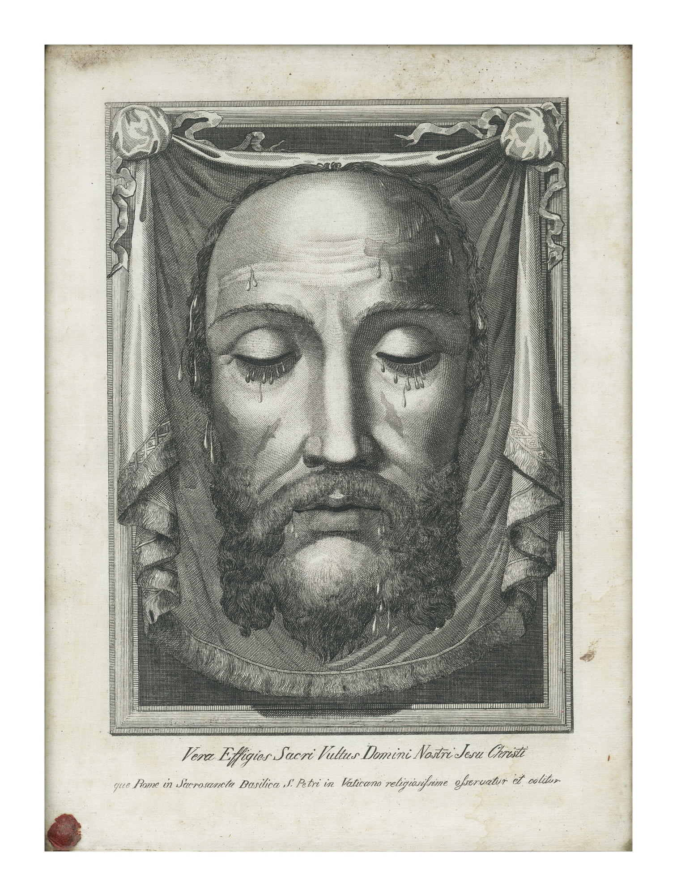

"Vera Effigies Sacri Vultus Domini Nostri Jesu Christi..."
Welcome to our local meetup group dedicated to quiet contemplation, reparative prayer, and theological exploration of the Veil of Veronica and the Holy Face of Our Savior.

We pray the Holy Rosary every day. It's our main spiritual weapon and the foundation of our spiritual lives. We pray the daily Holy Face prayers, "Lord show us thy face and we shall be saved." Followed by an Our Father, Haily Mary, and Glory be...
Holy Rosary confraternityWe are members of the League of St. Matrin. We explore the historical lineage of St. Veronica's Veil, the saints of the Holy Face, and its significance to our times.
League of St. MartinConnecting with fellow catholics who share the same devotion to the Holy Face and are committed to prayers of reparation, spiritual growth, and sacred tradition.
Holy Face archconfraternity